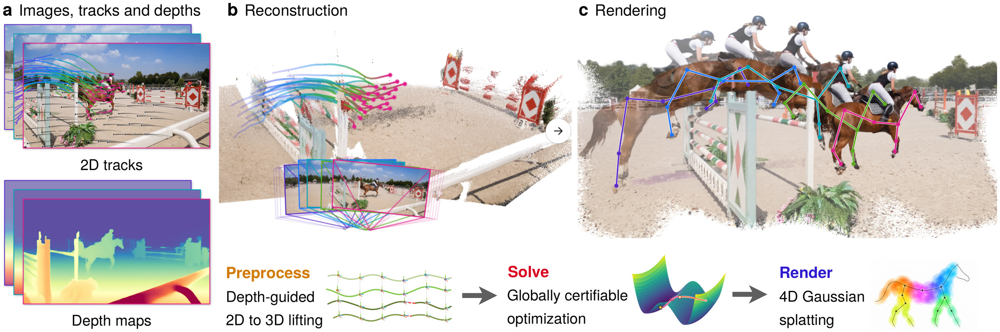

Lift tracks with predicted depth
Point trackers and a monocular depth model give 2D tracks and per-frame depth. Every tracked point is lifted to 3D, and the tracks are split into static and dynamic ones.
Overview · drag the slider or let it play
From (a) 2D tracks and monocular depth, a solver with certified global optimality recovers (b) the cameras, static geometry, and dynamic motion, which initialize (c) 4D Gaussian splatting for rendering.
Step 1 of 4 · Input
An off-the-shelf point tracker gives 2D tracks, and a monocular depth model gives per-frame depth. Masks split the tracks into static and dynamic ones.
Step 2 of 4 · Preprocess
Each 2D observation is lifted to a 3D point with its predicted depth. The depth of each frame is only known up to scale, so the solver also estimates one scale per frame. The clip lifts one frame this way: every pixel slides along its camera ray to its depth.
Step 3 of 4 · Solve
Our GPU solver certifies a scaled bundle adjustment over the static tracks as globally optimal, then the deformation graph's motion. The clip replays it: each frame's lifted depth falls into place as the cameras settle over eight iterations, then the dynamic tracks play.
Step 4 of 4 · Render
The certified cameras and graph motion initialize dynamic Gaussian splatting, which refines appearance and geometry for novel-view rendering. The clip is that model rendered from the panel's viewpoint, with the same tracked points.
XM4D splits 4D reconstruction into a static and a dynamic stage, and solves each one with a certifiably globally optimal GPU solver before any photometric training.
Each run is seen from one of its input cameras, held fixed while time plays: the trained 4D Gaussians rendered from it, the 3D tracks, and the embedded deformation graph that moves the dynamic points.
Turn each reconstruction around: its 4D Gaussians as trained, the deformation graph that moves the dynamic ones, the input cameras XM4D estimated, and 3D tracks of a few dynamic Gaussians.
Loading…
Drag to orbit · right-drag or shift-drag to pan · scroll to zoom
Both stages are solved by the same GPU Burer–Monteiro solver. These clips replay its iterates, from a copy of the solver that saved every one.
Static solve: scaled bundle adjustment over the static tracks. Every frame’s lifted depth is placed by that iterate’s camera and depth scale, and comes into register as the cameras settle.
Deformation graph: one segment’s rotation-only problem. Each node’s translations follow from its rotations in closed form. The clip starts from zero translation, with every node at its rest position, and from identity rotations, shown as the faint frames. The inset plots the cost above the optimum.
XM4D’s motion is explicit: a graph of nodes, each with a position and a rotation per frame, that carries the dynamic Gaussians. The reconstruction can therefore be edited and re-animated. A motion can drive a robot, a node can carry a known object’s 6D pose, parts can be posed by hand, and the moving object can be left out.
For people, the graph’s nodes are the joints of a body pose, so the solved motion is a skeleton animation. A Unitree G1 humanoid follows it through inverse kinematics on its own joints, within their limits and with its own link lengths, and takes the person’s place.
A robot carries a cereal box 1.8 m along a kitchen counter and turns it a quarter turn, while the camera moves 2.2 m. From the RGB video and the camera’s focal length, XM4D solves the camera’s path and the box as one rigid node, in the same world frame. The box’s mesh is registered to the reconstructed box once; from then on, the node’s motion is the box’s 6D pose in every frame.
Against the simulator’s ground truth, the camera path is off by 4.9 mm (RMSE over 2.2 m) and the box’s pose by 2.2° and 17 mm on average, for a box 22 cm tall. XM certifies both solves, the cameras and the box’s rotations.
For the fridge, the graph is one rigid node per door. Each door’s hinge, an axis and a point on it, is fitted to its solved poses (within a few millimetres), and the doors’ Gaussians are its part. Drag a slider to turn that door about its hinge, including combinations of door angles the video never showed.
Loading…
Drag to orbit · right-drag or shift-drag to pan · scroll to zoom
In a RoboCasa kitchen, a mobile robot opens and closes seven parts in turn, while the camera follows it: a drawer, two wall cabinets, the dishwasher, both fridge doors and the microwave. Each part is one rigid node. From its solved poses, XM4D tells a hinge from a slide and fits its axis; all seven get the right kind of joint. Drag a slider to open that part, and the view goes to it.
From the RGB video, monocular depth and the camera’s focal length; the parts’ masks come from SAM 3 with a few clicks each, and the robot is left out. Six of the seven fitted hinges and slides lie within 6° and 5 cm of the true ones. Three parts have sliders: the drawer, and the two wall cabinets up to 30° and 41°. Past that, the barely-seen insides they open onto blur. The fridge doors and the microwave fit well but stay closed: a floater beside the microwave shows in their views, the freezer door opens onto a hole, and the microwave’s trim swings with its door. The dishwasher’s fit opens the wrong way.
Loading…
Drag to orbit · right-drag or shift-drag to pan · scroll to zoom
Leaving out the dynamic Gaussians and rendering every frame from its own camera removes the car from the video. The road behind it comes from the frames where it was seen.
XM4D was run with the same pipeline on 76 videos, each from a moving camera with something moving in front of it. There were 30 from the DAVIS 2017 validation set, 24 from the Bonn RGB-D Dynamic dataset (people, balloons and boxes) and 22 robot wrist-camera episodes from DROID. Every run gets the RGB video and the camera’s focal length; depth is monocular. 73 runs finished. The three that failed are DAVIS bike-packing, kite-surf and motocross-jump.
| Dataset | Ground truth | ATE | RPE | Certified | Time |
|---|---|---|---|---|---|
| Bonn, 24 sequences | motion capture | 1.9 cm | 2.0 cm, 1.5° | 24 / 24 | 7.3 min |
| DROID, 22 episodes | robot kinematics | 1.3 cm | 0.3 cm, 0.5° | 22 / 22 | 3.1 min |
ATE and RPE are root-mean-square errors, averaged over the sequences. RPE is between consecutive frames. The median ATE is 1.8 cm on Bonn and 0.7 cm on DROID, where the wrist camera moves 0.66 m on average. DROID’s ground truth is the arm’s forward kinematics times the wrist camera’s hand-eye calibration. “Certified” counts the static solves that XM proved globally optimal. Times are per sequence on one RTX 6000 Ada, depth and tracking included.
| Frames | PSNR | SSIM | LPIPS | J | F | J&F |
|---|---|---|---|---|---|---|
| Held out (225) | 22.1 | 0.740 | 0.274 | 0.689 | 0.672 | 0.680 |
| Trained on (1,615) | 25.7 | 0.825 | 0.229 | 0.704 | 0.686 | 0.695 |
A held-out frame is rendered from its solved camera without ever being seen in training. J and F compare the silhouette of the moving Gaussians with DAVIS’s object masks, as region overlap and boundary accuracy. All 29 static solves are certified, as are all 1,991 solves of the motion graph’s segments. A video takes 41 min on average: 2.4 for depth, masks and tracks, 1.0 for the cameras, 2.8 for the motion graph and 34.8 for training the 4D Gaussians.
Point trackers and a monocular depth model give 2D tracks and per-frame depth. Every tracked point is lifted to 3D, and the tracks are split into static and dynamic ones.
A scaled bundle adjustment over camera poses, per-frame depth scales, and static landmarks reduces to a QCQP over scaled rotations. Its SDP relaxation is solved by a GPU Riemannian staircase that returns a certificate of global optimality.
Dynamic motion is an embedded deformation graph whose node transformations are expressed relative to one rest frame. Tracking, rigidity, and smoothness then reduce to a rotation-only QCQP that the same certified solver handles.
The certified cameras and graph motion initialize dynamic Gaussian splatting, which refines appearance and geometry for novel-view rendering.

XM4D is the journal extension of XM, our RSS 2025 solver for static structure from motion. It keeps XM's certifiable optimization and carries it over to dynamic scenes.
RSS 2025 Best Systems Paper Award
This work · journal extension
Accurate 4D reconstruction remains challenging: jointly estimating camera motion, scene geometry, and non-rigid deformation entails highly nonconvex optimization, making global optimality difficult to guarantee. We present XM4D, a framework for accurate and efficient 4D reconstruction built upon certifiably globally optimal geometric optimization. By separating camera motion estimation from non-rigid deformation, we formulate both stages as structured quadratically constrained quadratic programs (QCQP) that admit semidefinite programming (SDP) relaxations and verifiable global optimality certificates of the resulting SDPs. For camera motion estimation, we lift static point tracks into 3D using foundational depth prediction models and formulate a scaled bundle adjustment problem that jointly estimates camera poses, depth scales, and static landmarks. By analytically eliminating translations and landmarks, we reduce the problem to a QCQP over scaled rotations. For non-rigid reconstruction, we represent dynamic motion using an embedded deformation graph (EDG) and show that its tracking, rigidity, and temporal regularization objectives similarly reduce to a rotation-only QCQP. Both problems admit SDP relaxations that we solve efficiently with a GPU-accelerated Burer–Monteiro solver based on Riemannian optimization. The recovered geometry further initializes dynamic Gaussian splatting for photometric refinement. Extensive experiments across seven benchmarks demonstrate accurate camera motion estimation on both static and dynamic scenes, efficient optimization that scales to thousands of frames, and state-of-the-art novel-view rendering quality.
@article{han2026xm4d,
title = {{XM4D}: Non-Rigid Convex Structure from Motion with Embedded
Deformation Graphs for {4D} Reconstruction},
author = {Han, Haoyu and Lei, Jiahui and Benarroch Jedlicki, Jack and Yang, Heng},
year = {2026}
}If you use the static solver, please also cite XM:
@inproceedings{han2025xm,
title = {Building Rome with Convex Optimization},
author = {Han, Haoyu and Yang, Heng},
booktitle = {Robotics: Science and Systems (RSS)},
year = {2025}
}